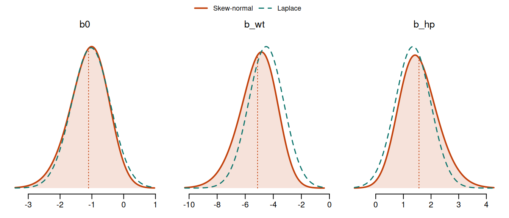
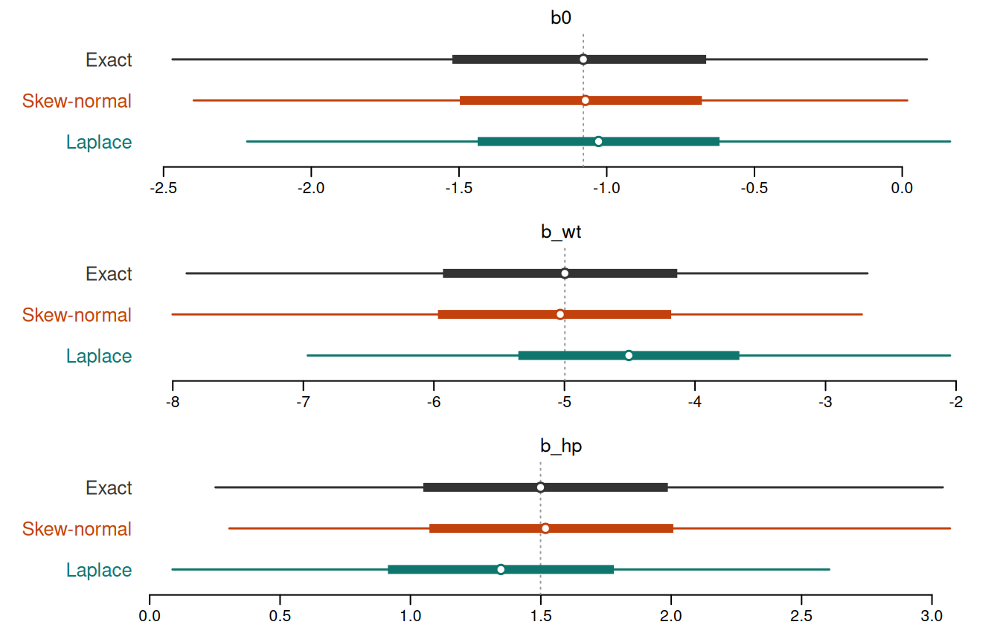
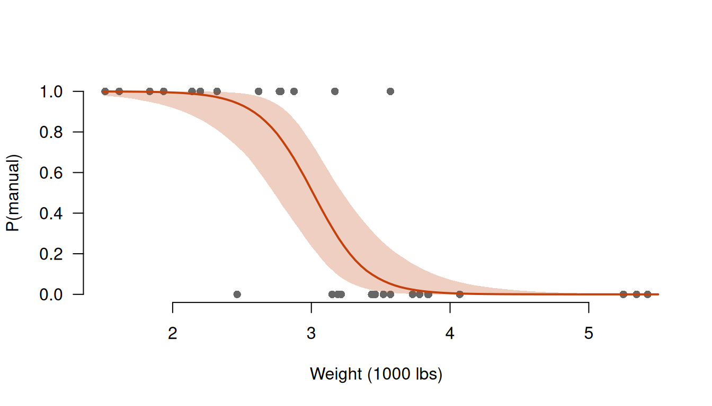

library(inlavanilla)
X <- cbind(1, scale(mtcars$wt), scale(mtcars$hp))
y <- mtcars$amThe idea
If you can write down the log-likelihood plus the log-prior, inlavanilla gives you approximate Bayesian inference for the parameters of your model: posterior marginals and draws, the marginal likelihood, and leave-one-out cross-validation. There is no sampler and no tuning, and small models take milliseconds. It runs the approximation pipeline of INLAvaan on any log-posterior:
- Joint Gaussian (Laplace). Find the posterior mode and the curvature there. This gives a Gaussian approximation and the Laplace estimate of the log marginal likelihood.
- VB mean correction. Recentre the Gaussian at the mean that maximises its expected log-posterior, a better estimate of the posterior mean than the mode.
- Skew-normal marginals. For each parameter, scan the log-posterior along the path the Gaussian predicts, correct the scan for the changing volume of the other parameters, and fit a skew-normal to it.
- Gaussian copula draws. Couple the skew-normal marginals through the Gaussian’s correlations, for draws of any function of the parameters.
The Gaussian is fast but symmetric; the skew-normal marginals keep the speed and add the skewness that small samples, bounded quantities and nonlinear models produce. This vignette works through an example where that skewness matters.
Which cars are manual?
The mtcars data describe 32 cars from 1973–74. Which have a manual gearbox (am = 1)? Heavy cars tend to be automatic, and for a given weight, more powerful ones tend to be manual. We fit a logistic regression on weight and horsepower, both standardised.
With 32 cars and two strong predictors the two classes nearly separate, so the likelihood is lopsided: it falls away steeply on one side of the maximum and slowly on the other. The posterior inherits that skew, which a Gaussian approximation misses.
Writing the log-posterior
inla_vanilla() needs a function of the parameter vector that returns the log-posterior density, up to a constant. We give each coefficient a weakly informative \(N(0, 2.5^2)\) prior. Regression coefficients can take any real value, so they need no reparameterisation.
theta arrives as a named vector, so theta[["b_wt"]] would work too. Further arguments, here X and y, are passed through ..., as in optim().
Fitting
init <- c(b0 = 0, b_wt = 0, b_hp = 0)
fit <- inla_vanilla(logpost, init, X = X, y = y)
#> ✔ Found the posterior mode in 10 iterations [6ms]
#> ✔ VB mean correction, max shift 0.44σ [10ms]
#> ✔ Fitted 3 skew-normal marginals [6ms]
fit
#> ── INLAvanilla ───────────────────────────────────────── Skew-normal + VB ──
#>
#> Log marginal likelihood: -11.61 · Converged in 10 iterations (25ms)
#>
#> Mean SD 2.5% 50% 97.5% Mode
#> 1 b0 -1.104 0.615 -2.398 -1.072 0.017 -1.008
#> 2 b_wt -5.12 1.35 -8.00 -5.03 -2.72 -4.85
#> 3 b_hp 1.564 0.704 0.306 1.518 3.069 1.423The header names the approximation: skew-normal marginals, with the VB mean correction. The line under it gives the log marginal likelihood and whether the fit converged: whether the mode search and the VB correction both reached their solutions. The table summarises each parameter’s skew-normal marginal: the mean, standard deviation, quantiles and mode. Had the fit raised a warning, or summary() flagged one of its checks, a line below the table would say so. Each step of the fit reports as it finishes, with the time it took. verbose = TRUE adds a full diagnostic of each step, and silent = TRUE prints nothing at all, as in a simulation; the warnings it would have shown are kept in fit$warnings. The fits below use silent = TRUE.
summary() adds diagnostics for each stage:
summary(fit)
#> ── INLAvanilla summary ───────────────────────────────── Skew-normal + VB ──
#>
#> Log marginal likelihood: -11.612 · Converged in 10 iterations (25ms)
#> Laplace -11.709 + VB term 0.097
#> 263 logpost calls: mode 6ms, VB 10ms, marginals 6ms
#>
#> ── Posterior marginals ──
#>
#> Mean SD 2.5% 50% 97.5% Mode
#> 1 b0 -1.104 0.615 -2.398 -1.072 0.017 -1.008
#> 2 b_wt -5.12 1.35 -8.00 -5.03 -2.72 -4.85
#> 3 b_hp 1.564 0.704 0.306 1.518 3.069 1.423
#>
#> ── Diagnostics ──
#>
#> VB shift NMAD Unscanned Ridge bend Mean gap
#> 1 b0 -0.13 0.0091 0.00041 0.14 0.0048
#> 2 b_wt -0.44 0.017 0.0022 0.050 -0.052
#> 3 b_hp 0.28 0.0049 0.0018 0.024 0.057
#>
#> ✔ Mode found in 10 iterations (Newton step 1.4e-07σ).
#> ✔ Hessian condition number 4.4, in SD units.
#> ✔ VB correction settled in 4 iterations: max shift 0.44σ.
#> ✔ Skew-normal fits: max NMAD 0.017, unscanned mass 0.0022, ridge bend 0.14,
#> mean gap 0.057σ.- VB shift is how far the VB mean correction moved each mean from the mode, in posterior SDs. The weight coefficient moves by nearly half an SD: the posterior is far from symmetric.
- NMAD measures how well the skew-normal fits the scanned log-posterior (the largest gap relative to the peak); small is good.
- Unscanned is the mass each skew-normal puts beyond the scanned window, 4 posterior SDs either side of the mode, where it is extrapolated. It is flagged above 0.05.
- Ridge bend is the log-density, in nats, that each scan misses 2 SDs out, because it runs along a straight line, the conditional mode path, while the ridge of high density bends away from it. Above 0.25 it is flagged: the marginal SD may then be about 10% too small. The intercept’s ridge bend is below that, and its marginal is only a little narrow, as the check against the exact posterior below shows.
- Mean gap compares the skew-normal mean with the VB-corrected mean, in posterior SDs. Both estimate the posterior mean, so they should agree; a large gap means the posterior is far from Gaussian and either may be off.
A flagged value is red in the table, and its check gets a line of its own, marked “!”, below the table.
diagnostics(fit) returns the same checks as numbers, under the names that INLAvaan’s diagnostics() uses, and vignette("diagnostics", package = "inlavanilla") explains each one.
Seeing the skew
plot() draws each skew-normal marginal (solid), with the Laplace Gaussian (dashed) for comparison:
plot(fit)
The weight coefficient has a long tail away from zero, and the Gaussian, centred at the mode, sits too close to zero.
Checking against the exact posterior
With three parameters we can afford the exact posterior by brute force: the log-posterior on a fine grid, normalised numerically. This is the reference the approximations are trying to match.
s <- fit$summary
axes <- lapply(seq_len(3), function(j) {
half <- 7 * s[j, "SD"]
seq(s[j, "Mean"] - half, s[j, "Mean"] + half, length.out = 61)
})
grid <- as.matrix(expand.grid(axes))
eta <- X %*% t(grid)
lp <- colSums(y * eta - log1p(exp(eta))) +
rowSums(dnorm(grid, 0, 2.5, log = TRUE))
w <- exp(lp - max(lp))
# Exact marginal quantiles, by the midpoint rule on each axis
exact_quantiles <- function(j, probs) {
p <- tapply(w, grid[, j], sum)
p <- as.numeric(p) / sum(p)
approx(cumsum(p) - p / 2, axes[[j]], probs, ties = mean)$y
}A caterpillar plot compares the exact posterior with the skew-normal marginals and the Laplace Gaussian: thick bars are the central 50% intervals, thin bars the 95% intervals, and dots the medians. The dotted line is the exact median.
probs <- c(0.025, 0.25, 0.5, 0.75, 0.975)
sn_q <- summary(fit, probs = probs)$table[, paste0(100 * probs, "%")]
cols <- c(Exact = "grey20", `Skew-normal` = "#C2410C", Laplace = "#0F766E")
op <- par(
mfrow = c(3, 1),
mar = c(2.5, 7.5, 1.8, 1),
mgp = c(2, 0.6, 0),
las = 1
)
for (j in seq_len(3)) {
q <- rbind(
Exact = exact_quantiles(j, probs),
`Skew-normal` = sn_q[j, ],
Laplace = qnorm(probs, fit$mode[j], sqrt(fit$cov[j, j]))
)
at <- 3:1
plot(range(q), c(0.5, 3.5), type = "n", yaxt = "n", xlab = "", ylab = "",
main = names(init)[j], font.main = 1, bty = "n")
abline(v = q["Exact", 3], lty = 3, col = "grey60")
segments(q[, 1], at, q[, 5], at, col = cols, lwd = 1.5)
segments(q[, 2], at, q[, 4], at, col = cols, lwd = 6, lend = 1)
points(q[, 3], at, pch = 21, bg = "white", col = cols, cex = 1.3, lwd = 1.5)
mtext(
rownames(q),
side = 2, at = at, line = 0.5, col = cols, adj = 1, cex = 0.8
)
}
par(op)The skew-normal intervals track the exact ones closely. The intercept’s is a little narrow, by about 5%, as its ridge bend suggested. The Laplace intervals are symmetric about the mode, so they cut the long tails short and miss values on the far side.
The grid also gives the exact log marginal likelihood:
The VB correction moves the Laplace estimate most of the way to the exact value.
Supplying a gradient
Without a gradient, inla_vanilla() uses finite differences of logpost. An analytic gradient makes the fit faster and more accurate, and it pays off more as the number of parameters grows. For logistic regression it is short:
grad <- function(theta, X, y) {
eta <- as.numeric(X %*% theta)
as.numeric(crossprod(X, y - plogis(eta))) - theta / 2.5^2
}
fit_g <- inla_vanilla(logpost, init, grad = grad, X = X, y = y, silent = TRUE)
max(abs(fit_g$summary - fit$summary))
#> [1] 1.813245e-06
rbind(finite_differences = fit$counts, gradient = fit_g$counts)
#> logpost grad
#> finite_differences 263 0
#> gradient 134 108The two fits agree to several decimal places, and the gradient version calls logpost about half as often. inla_vanilla() checks a supplied gradient against finite differences at init and warns if they disagree, which catches most slips in hand-derived gradients.
Cheaper approximations
The VB correction and the skew-normal marginals are optional, and independent of each other. vb = FALSE skips the VB correction, and marginals = "gaussian" skips the scans and keeps the Gaussian marginals. With both, the fit is the Laplace approximation alone.
fit_fast <- function(...) {
inla_vanilla(logpost, init, X = X, y = y, silent = TRUE, ...)
}
# Named as the header of print() names them
fits <- list(
`Skew-normal + VB` = fit,
`Skew-normal` = fit_fast(vb = FALSE),
`Laplace + VB` = fit_fast(marginals = "gaussian"),
Laplace = fit_fast(vb = FALSE, marginals = "gaussian")
)
round(t(sapply(fits, function(f) {
c(
calls = f$counts[["logpost"]],
logml = f$logml,
f$summary["b_wt", c("Mean", "2.5%", "97.5%")]
)
})), 2)
#> calls logml Mean 2.5% 97.5%
#> Skew-normal + VB 263 -11.61 -5.12 -8.00 -2.72
#> Skew-normal 207 -11.71 -5.12 -8.00 -2.72
#> Laplace + VB 152 -11.61 -5.06 -7.52 -2.60
#> Laplace 96 -11.71 -4.51 -6.97 -2.05Without the VB correction the skew-normal marginals are the same, because they are scanned around the mode, but the log marginal likelihood is the Laplace one. The VB correction moves the Gaussian’s centre most of the way to the posterior mean, but a Gaussian cannot follow the long tail. Without a gradient it takes the expected gradient from values of logpost alone, and costs about as much as finding the mode. With a gradient it is more accurate, and as the number of parameters grows, it and the marginals become the slowest stages.
Derived quantities
sampling() draws from the approximate joint posterior. The draws come from the skew-normal marginals, coupled by a Gaussian copula, and never call logpost, so even large numbers of draws are cheap:
Its fun argument maps each draw to any quantity of interest. Here is the weight, in pounds, at which a car of average horsepower is equally likely to be manual or automatic. That is where the linear predictor crosses zero, a ratio of coefficients and so skewed:
The same idea gives the whole fitted curve. Here is the probability of a manual gearbox against weight, for a car of average horsepower, with a 95% credible band:
wt_grid <- seq(1.5, 5.5, length.out = 100)
z_grid <- (wt_grid - wt_mean) / wt_sd
prob <- sampling(fit, nsamp = 4000, fun = function(theta) {
plogis(theta[["b0"]] + theta[["b_wt"]] * z_grid)
})
band <- apply(prob, 2, quantile, c(0.025, 0.5, 0.975))
plot(
mtcars$wt, mtcars$am,
pch = 16, col = "grey40", xlab = "Weight (1000 lbs)",
ylab = "P(manual)", las = 1, bty = "n"
)
polygon(
c(wt_grid, rev(wt_grid)), c(band[1, ], rev(band[3, ])),
col = adjustcolor("#C2410C", 0.25), border = NA
)
lines(wt_grid, band[2, ], col = "#C2410C", lwd = 2)
Comparing models
The log marginal likelihood compares models through Bayes factors. Does horsepower help, once weight is known?
fit_wt <- inla_vanilla(
logpost,
c(b0 = 0, b_wt = 0),
X = X[, 1:2],
y = y,
silent = TRUE
)
log_bf <- fit$logml - fit_wt$logml
log_bf
#> [1] 1.418548A log Bayes factor of 1.4 favours the model with horsepower, by a factor of about 4.
The log marginal likelihood estimates \(\log p(y)\) only when logpost returns the full \(\log p(y, \vartheta)\), with every normalising constant of the likelihood and the prior. Here dbinom() and dnorm() include theirs.
To compare models by how well they predict new data instead, write the log-likelihood as one term per observation and use loo(): see vignette("model-comparison", package = "inlavanilla").
Constrained parameters
The approximation works on an unconstrained scale1, where each parameter is free to take any real value. Reparameterise anything constrained, such as a standard deviation as its log, a probability as its logit, or a correlation as its Fisher \(z\). The parameterisation also matters for accuracy, since each parameter’s skew-normal lives on the scale you choose, and scales on which the posterior is closer to Gaussian work better.
logpost is then the log density of the parameters you pass. A prior stated on the natural scale needs the log-Jacobian of the transformation. For the share of manual cars \(p\), with a uniform prior, on the logit scale \(\vartheta = \operatorname{logit} p\), the Jacobian is \(dp / d\vartheta = p(1 - p)\):
Natural-scale summaries come from the draws, and match the exact Beta posterior:
p_draws <- sampling(fit_p, nsamp = 20000, fun = function(theta) {
plogis(theta[["logit_p"]])
})
rbind(
inlavanilla = quantile(p_draws, c(0.025, 0.5, 0.975)),
exact = qbeta(c(0.025, 0.5, 0.975), 1 + sum(y), 1 + sum(1 - y))
)
#> 2.5% 50% 97.5%
#> inlavanilla 0.2546500 0.4104370 0.5794388
#> exact 0.2547618 0.4100149 0.5786063Gradients for free, and compiled code
RTMB gives the exact gradient of a log-posterior written in R, by automatic differentiation, with nothing to derive and no compiler. The log-posterior above needs only RTMB’s versions of its densities:
logpost_rtmb <- function(theta, X, y) {
eta <- as.numeric(X %*% theta)
sum(RTMB::dbinom(y, 1, RTMB::plogis(eta), log = TRUE)) +
sum(RTMB::dnorm(theta, 0, 2.5, log = TRUE))
}
obj <- RTMB::MakeADFun(
function(p) logpost_rtmb(p$theta, X, y),
list(theta = unname(init)),
silent = TRUE
)
fit_rtmb <- inla_vanilla(obj$fn, init, grad = obj$gr)Any R function works as logpost and grad, including compiled code from Rcpp or TMB. A TMB template usually returns the negative log-posterior, to be minimised, so negate its obj$fn and obj$gr.
The articles Speeding up with Rcpp and Gradients with RTMB work through both routes for a structural equation model with 39 parameters. C++ makes each call about ten times faster than R. A gradient from RTMB makes the fit more accurate, at about the speed of R.
References
Jamil, H., & Rue, H. (2026a). Approximate Bayesian inference for structural equation models using integrated nested Laplace approximations (arXiv:2603.25690 [stat.ME]). arXiv. https://doi.org/10.48550/arXiv.2603.25690
Jamil, H., & Rue, H. (2026b). Implementation and workflows for INLA-based approximate Bayesian structural equation modelling (arXiv:2604.00671 [stat.CO]). arXiv. https://doi.org/10.48550/arXiv.2604.00671